In China Employee Termination: Pulse Mission-Control Brief for Foreign Employers (2026 Testing Run)
Key takeaways
- Use a mission-control O-R-A model (Objective, Risk, Action) to guide China termination decisions.
- Start with legal/regulatory objective clarity, then score risk across evidence, communication, and settlement.
- Convert each risk into a specific owner-led action before employee-facing steps.
- Payroll and IIT certainty must be treated as mission-critical, not administrative cleanup.
- This format helps foreign teams make faster decisions with fewer contradictions.
Pulse lead: the practical signal today
Foreign employers often ask whether they are “allowed” to terminate under China law. The more useful management question is whether the case is execution-ready: can the team prove route logic, evidence integrity, communication coherence, and settlement accuracy under review? Too many cases fail because risk is described but not converted into owned actions.
This run uses a mission-control brief to fix that gap: Objective first, Risk second, Action third.
Plain-language legal/regulatory context first
China’s Labor Contract Law provides the route framework for employer-initiated termination. State Council implementation regulations and SPC judicial interpretation shape practical dispute review. For foreign clients, the practical implication is simple: legal route validity is necessary, but outcomes depend on coherent process behavior and documentary reliability.
In mission-control terms: a valid objective is not enough unless risk and action alignment are complete.
Mission board (Objective → Risk → Action)
Objective 1: Confirm lawful route fit
Risk: route rationale differs between legal, HR, and manager language.
Action: issue one route memo with legal anchor, risk grade, and approved narrative.
Objective 2: Secure evidence credibility
Risk: fragmented records or chronology gaps weaken defensibility.
Action: freeze evidence index, assign evidence owner, and clear missing-critical-items list.
Objective 3: Stabilize communication process
Risk: script, notice, and meeting behavior diverge.
Action: lock communication package with bilingual control text and manager briefing.
Objective 4: Lock settlement certainty
Risk: severance/wage/leave/IIT logic changes after communication prep.
Action: lock settlement model version and approval trail before final employee-facing steps.
Objective 5: Pre-plan exception response
Risk: refusal, late facts, or HQ pressure triggers ad hoc decisions.
Action: publish exception matrix with escalation owners and override governance.
Practical implications for foreign employers
- O-R-A framing improves executive readability and decision speed.
- It reduces “analysis without ownership” by tying each risk to one action owner.
- It helps align HQ and local teams around a shared operational language.
- It supports city-specific adaptation through localized risk thresholds.
For cross-border leadership, this structure improves meeting quality as well: instead of debating abstract risk, teams can review a concise objective board, identify the highest-risk item, and assign a concrete next action with deadline and owner. That reduces delay loops and keeps accountability visible.
Daily operations SOP (role-by-role)
Step 1: Mission setup (HR + legal)
Define objectives and assign O-R-A owners.
Step 2: Route/evidence pass (HR + legal + manager)
Validate objective fit and resolve evidence blockers.
Step 3: Settlement lock (Payroll + finance + HR)
Approve payout/IIT logic and freeze model version.
Step 4: Communication and exception lock (HR + manager + legal)
Approve scripts and exception matrix.
Step 5: Execute with O-R-A log (HR owner)
Capture decisions, actions, and timestamps during execution.
Step 6: Post-action audit (Legal + HR + payroll)
Verify completion and archive all mission artifacts within 48 hours.
Required document checklist
- O-R-A mission sheet
- Route memo and legal signoff
- Evidence index + chronology check
- Communication package and approval log
- Settlement worksheet + IIT note + version lock
- Exception matrix + override trail
- Execution log + service/payment records
- Closure audit + archive manifest
Exception handling playbook
Unresolved high-risk item before execution
Hold and reassign action owner with deadline.
New fact invalidates objective
Reopen objective, rescore risk, and issue revised action plan.
Settlement discrepancy discovered late
Re-lock settlement objective before any external step.
Override requested without closed actions
Require formal risk acceptance and named approver.
Foreign-operator risk notes
- Time-zone lag risk: HQ approvals may miss local decision windows; define delegated authority thresholds.
- Translation control risk: route wording can drift between English and Chinese documents; set a controlling legal-language version.
- Vendor context risk: payroll vendors may calculate correctly but without route context; require legal-route references in payout worksheets.
- Management narrative risk: regional and local managers may frame the case differently; pre-brief a single approved narrative.
System implementation notes
Add O-R-A controls in HRIS/payroll workflow:
- Objective status and owner
- Risk severity score and reason code
- Action due date and closure status
- Settlement version + IIT field
- Override/approval audit trail
- Post-action closure score
Common mistakes and prevention
Mistake: risk listed but no action owner
Prevention: block progression until owner assigned.
Mistake: settlement action treated as optional
Prevention: make Objective 4 non-waivable.
Mistake: objectives not revisited after new facts
Prevention: mandatory objective revalidation trigger.
Mistake: no closure scorecard
Prevention: require post-action audit before case close.
What to do now
- Deploy O-R-A mission sheet for active cases.
- Assign one owner per risk action.
- Make settlement lock mandatory before communication.
- Add city-specific risk thresholds.
- Train managers on O-R-A communication discipline.
- Pilot on three active cases.
- Track unresolved-action age.
- Audit top risk categories monthly.
- Report mission completion metrics to leadership.
- Recalibrate O-R-A thresholds each hourly cycle.
Mission KPI dashboard
Track: objective completion rate before execution, unresolved-risk aging, action closure SLA, and post-action incidents by missed objective. Add one prevention metric: reroute rate after risk re-scoring.
Rollout sequence
Week 1-2: pilot O-R-A on medium-risk cases and calibrate risk scoring language.
Week 3-4: enforce Objective 4 settlement lock as a non-waivable control in all cases.
Month 2 onward: connect O-R-A metrics to leadership reporting and city-specific escalation rules.
This phased rollout improves adoption quality and avoids inconsistency between entities.
What to watch next
- Continued scrutiny of route-process coherence.
- Persistent sensitivity to settlement/IIT transparency.
- Ongoing city-level variance in forum practice.
FAQ
Is O-R-A governance legally required?
No. It is a management framework for execution quality.
Why put payroll in the mission core?
Because settlement ambiguity frequently increases dispute exposure.
Can smaller teams use this model?
Yes, by simplifying templates while keeping objective-owner discipline.
When should external PRC counsel be mandatory?
High-risk unilateral routes, restructuring actions, refusal scenarios, protected-sensitivity cases, and multi-city complexity.
Legal depth appendix (secondary)
This brief is grounded in the PRC Labor Contract Law, State Council implementation regulations, and SPC labor-dispute interpretation guidance. The practical implication remains consistent: route legality, process fairness, and documentary reliability must align through settlement completion.
Disclaimer
This content is informational only and not legal advice. China labor outcomes are fact-specific and locally sensitive. Seek qualified PRC legal advice before action.
Sources
- National People’s Congress. Labor Contract Law of the PRC (English). http://www.npc.gov.cn/zgrdw/englishnpc/Law/2007-12/13/content_1384064.htm (accessed 2026-03-01).
- State Council. Regulations for the Implementation of the Labor Contract Law (Decree No. 535). https://www.gov.cn/gongbao/content/2008/content_1124615.htm (accessed 2026-03-01).
- Supreme People’s Court. Interpretation on labor dispute application issues (Fa Shi [2020] No. 26). https://www.court.gov.cn/fabu/xiangqing/243981.html (accessed 2026-03-01).
- China Briefing (Dezan Shira & Associates). Employee Termination in China (updated 2025-10-17). https://www.china-briefing.com/news/employee-termination-in-china/.
- Littler. Key Recent Developments in China’s Employment Law (2024-03-20). https://www.littler.com/news-analysis/asap/key-recent-developments-chinas-employment-law-china-us-comparative-perspective.
- PwC Worldwide Tax Summaries. People’s Republic of China: Individual Taxes on Personal Income (2025-01-15). https://taxsummaries.pwc.com/peoples-republic-of-china/individual/taxes-on-personal-income.
Need local employment support in China?
If you need a compliance-first partner for hiring, payroll, and risk controls in China, China-Payroll.com can help evaluate the right setup.
Image Prompt Pack
Create a 16:9 hero image for article title: 'In China Employee Termination: Pulse Mission-Control Brief for Foreign Employers (2026 Testing Run)'. Scene: global operations team evaluating workforce model options for China market entry. Include motifs: decision…